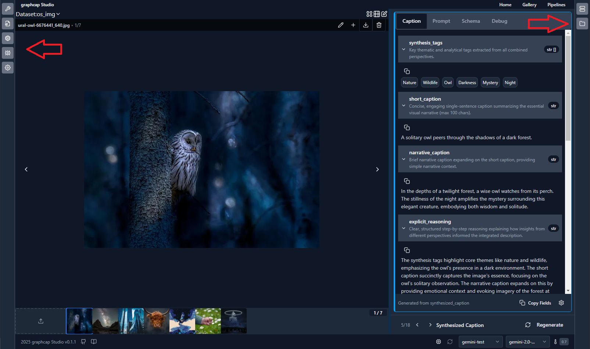

Action Drawers#
graphcap Studio now features collapsible action drawers on both sides of the interface for quick access to configuration and tools.
{kind=link}
Left Action Drawer#
The left drawer provides access to common configuration options and feature flags:
Optional visibility based on context
Contains feature toggles and standard configuration options
Designed for frequent access to common settings
Collapsible to maximize workspace when needed
Right Action Drawer#
The right drawer houses advanced options and developer tools:
Optional visibility based on context
Contains workspace file browser
Server connection management * Media server status and configuration * graphcap server status and configuration
Advanced configuration options
Usage#
Both drawers can be:
Collapsed to icons-only mode to maximize workspace
Expanded to full width for detailed configuration
Toggled using the chevron controls when expanded
Key Benefits#
Eliminates need for manual config file editing
Provides 100% GUI-based configuration
Centralizes all settings in easily accessible locations
Separates common vs advanced options logically
Maintains clean workspace while keeping tools accessible